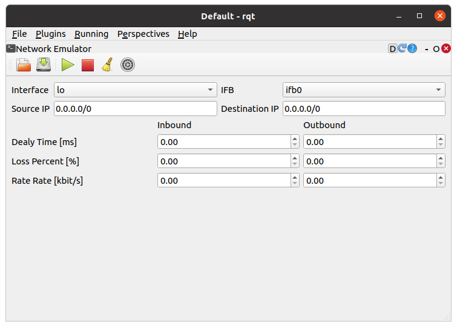
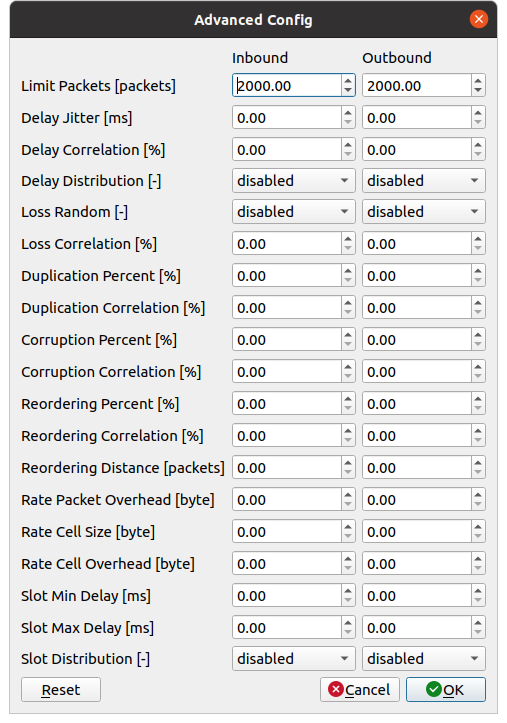

Network Emulator¶
ここでは、Network Emulatorの使い方を説明します。Network Emulatorは、広域ネットワークのプロパティを模擬してプロトコルをテストする（ネットワーク上に擬似的に通信障害の効果を与える）rqtの拡張機能です。
Network Emulatorの起動¶
Network Emulatorを起動する手順は次のとおりです。
メインメニュー「Plugins」-「Miscellaneous Tools」-「Network Emulator」を選択する
プロパティの模擬¶
プロパティを模擬する手順は次のとおりです。
各プロパティに任意の値を入力する
ツールバーの▶ボタンを押してプロパティを適用する（もう一度押すとプロパティが解除される）
Network Emulatorでは、以下のプロパティを設定することができます。
パラメータ |
デフォルト値 |
単位 |
意味 |
|---|---|---|---|
Interface |
lo |
- |
パケットの送信に使用するインタフェースを指定します |
IFB |
ifb0 |
- |
パケットの受信に使用するインタフェースを指定します |
Source IP |
0.0.0.0/0 |
- |
パケットの送信元を限定する際のIPアドレスを指定します |
Destination IP |
0.0.0.0/0 |
- |
パケットの送信先を限定する際のIPアドレスを指定します |
Inbound/Outbound Delay Time |
0.00 |
ms |
パケットを受信する／送信する際の遅延時間を指定します |
Inbound/Outbound Loss Percent |
0.00 |
% |
パケットを受信する／送信する際のパケット損失率を指定します |
Rate Rate |
0.00 |
kbits |
パケットを受信する／送信する際のレイテンシ（通信速度の上限）を指定します |
高度な設定¶
Network Emulatorでは、以下を設定することができます。詳細については、こちら を参照してください。
